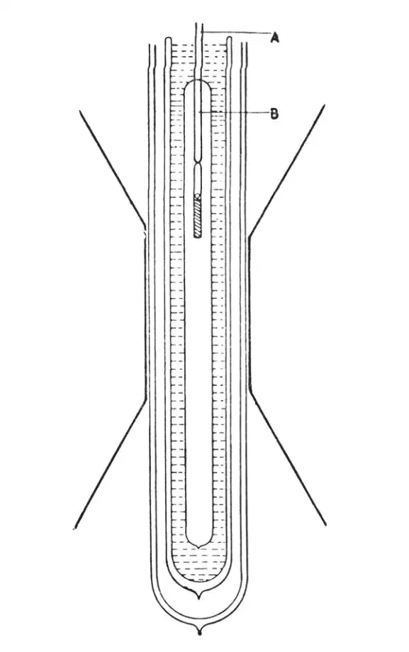
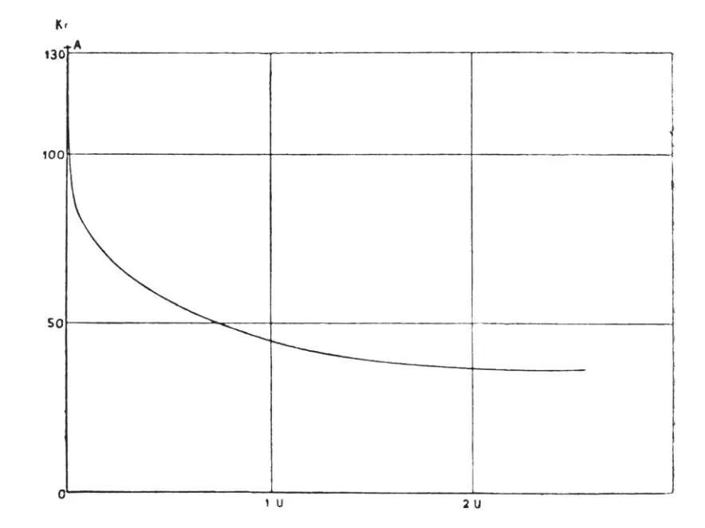

中文
中文W. J. de Haas
Editor’s Note
Physicist Wander Johannes de Haas of the University of Leiden reports here on recent experiments reaching extremely low temperatures using the method of “adiabatic demagnetisation”. In this method, a material magnetised by being held in a strong magnetic field can grow much colder if the field is abruptly removed. De Haas describes experiments with cerium fluoride. Preliminary tests were able to achieve a temperature of 0.27 K, and de Haas’s team had more recently reduced this to 0.085 K. With the same apparatus, de Haas suggests, much lower temperatures should be possible. Given these extremes, he notes, current methods for measuring temperatures have reached their limits, and further progress will require new thermometers suited to very low temperatures. 中文
IN 1926 Debye pointed out that temperature must decrease when a magnetised body is demagnetised adiabatically. Giauque made the same remark in 1927; and still earlier the same idea was expressed by Langevin for oxygen. Debye calculated the predicted effect for the case of gadolinium sulphate. His calculation was based upon the following considerations: a magnetisable body contains a great number of small elementary magnets. When such a body is magnetised these magnets are directed. The part of the entropy belonging to this order is decreased and, the process being supposed isentropic, the part of the entropy connected with the statistical movement must necessarily increase. When, on the contrary, the disorder of the elementary magnets is increased by demagnetisation, the part of the entropy connected with the magnetisation is increased and the part belonging to the statistical movement is decreased, so that the body is cooled down. 中文
If we wish to obtain easily seen results, the following points require special attention: (1) the elementary magnets shall not exert a directing influence upon each other (no ferromagnetic body); (2) the elementary magnets shall have a moment as large as possible, subject to the restriction of (1); (3) at low temperatures the effect will be greatest, as here the part of the entropy belonging to the magnetisation becomes comparable with the other part, while at the same time the order strongly increases. 中文
The condition to be fulfilled by the experimental arrangement in order to obtain extremely low temperatures is that the exchange of heat with the surroundings both by radiation and by connexion is cut down. In our experiments this condition is satisfied. The substance that is cooled down is at the same time used as a thermometer. 中文
The experiments were made with cerous fluoride (a weakly paramagnetic salt of one of the rare earths) as suggested by Prof. Kramers, of Utrecht (see “Leipziger Vorträge”, 1933). Fig. 1 very diagrammatically represents the experimental arrangement. The rod A is fixed to a balance. It carries a small Dewar flask, which contains a small tube filled with cerous fluoride and suspended by a central carrier B. The whole apparatus is placed between the poles of the large electro-magnet of the Kamerlingh Onnes Laboratory in such a way that the salt occupies the spot of maximum H.dH/dx (x=vertical co-ordinate). The lower extremity of the rod A together with the small Dewar flask is surrounded by liquid helium boiling at 1.26°K. The thermal insulation of the cerous fluoride is so good, that after 4–5 hours only a very small quantity of salt of exceedingly low heat capacity (the latter is inversely proportional to T3) is cooled down to 1.26°K. 中文

Fig. 1 中文
We know that finally this temperature has been reached, because the salt is the indicator of its own temperature. This paramagnetic body is drawn into the field (31 k. gauss) by a force K=M.dH/dx, where M is the total moment of the body. As M=φ(H, T) and as H remains constant, we easily see, by measuring K, when T has become constant. 中文
As soon as this is the case the body is demagnetised by lowering the field to 2.7 k. gauss in the first experiments, to 1,000 or 500 gauss in later experiments. 中文
In this weak field the force K is measured as a function of the time. In this way we obtain a curve as shown in Fig. 2. 中文

Fig. 2 中文
The point A on the curve corresponds to the force at the lowest temperature, while the asymptote after a long time corresponds to the force at 1.26°K. The steep fall of the curve in the beginning is due to the fact that in the vacuum of the small Dewar flask a trace of helium (10－7 mm.) has been left intentionally for thermal contact. This helium gas is condensed under development of the heat of condensation. When the pressure of the helium gas is still lower, the curve has a different form and heating up with the time goes extremely slowly. The cold has been caught in a trap. The vacuum becomes practically absolute and heat is no longer transmitted. 中文
The forces are directly proportional to the moments and the only thing we have to find out is to which temperatures these moments correspond. The connexion between temperature and moment has been determined between 7.2°K. and 1.3°K. The curve representing this connexion was extrapolated linearly, though this gives a stronger increase of the moment than the curve itself does. That is why we can only give an upper limit of the temperature reached. 中文
The first experiments were made in March and April of this year with cerium fluoride and gave as the upper temperature limit 0.27°K. More recent experiments with dysprosium ethyl sulphate gave the upper limit 0.17°K. Finally, the experiments of July last made with cerium ethyl sulphate gave as the upper temperature limit 0.085°K. 中文
It is possible that with the same experimental arrangement much lower temperatures can be reached. The choice of the right substance will decide further results. I am convinced that with the above-described arrangement the theoretical limit can be reached. 中文
Up to the present, the lowest temperatures had been reached with the aid of liquid helium, boiling under very low pressures. The results of this method evidently depend upon the capacity of the pumps used and upon the perfection of the thermal insulation. 中文
With this method Kamerlingh Onnes reached in October, 1921, a temperature of 0.82°K. Keesom worked with diffusion pumps of a capacity fifteen times higher than that of the pumps Kamerlingh Onnes had. In 1929 he reached a temperature of 0.71°K. It is, however, difficult to proceed much further in this way. 中文
The conception of temperature is based upon the properties of the ideal gas. The temperature is determined with the aid of the helium thermometer (several corrections being applied). At the extremely low temperatures reached recently no gas thermometric measurement of the temperature is possible, so far as I can see. 中文
A thermometric scale based upon another process must be fitted to the absolute temperature scale; only a magnetic scale can be used for this purpose. 中文
Just as was done in gas thermometry, we shall have to find some substances, which within a considerable range of temperature show the same behaviour; a highly developed theory will then enable us to fix the temperature with the same accuracy by means of magnetic thermometry as by the use of gas thermometric methods. 中文
A reservation must be made, however, for the case that at very low temperatures the substances used might become ferro-magnetic or might show a new kind of ferro-magnetism. In this case little might be said about the temperature. 中文
Another great difficulty is this: if by means of the magnetic method we wish to cool down other substances, the question of the thermal contact becomes urgent. The radiation is negligible, and also the vapour pressure of the helium becomes so small that thermal contact by means of gaseous helium can scarcely be considered. 中文
The experiments were made in collaboration with Dr. E. C. Wiersma, conservator of the Laboratory, to whom I express my warmest thanks for his help and for many suggestions. To Prof. H. A. Kramers of Utrecht I am indebted for his valuable theoretical assistance. 中文
(132, 372-373; 1933)